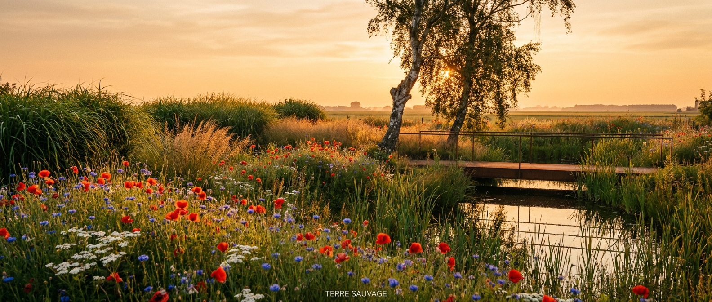
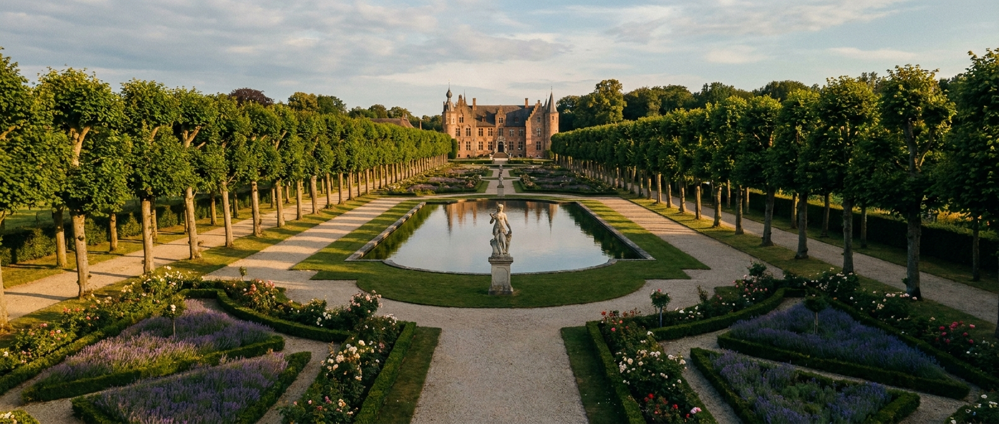
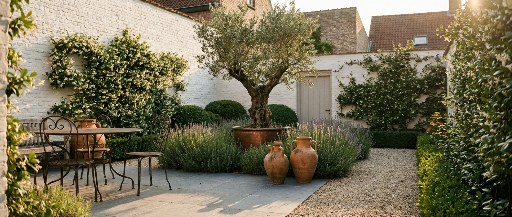

Selectie 2024–2026
Zes recente werven.

2026 — week 17
Sint-Anna ommuurde tuin
8000 Brugge · 125 m²

2025 — najaar
Renaissance pastorij
8380 Lissewege · 2 200 m²

2024 — najaar
Sint-Michiels — minimaal
8200 Sint-Michiels · 480 m²

2025 — voorjaar
Polderhuis Zeebrugge
8380 Zeebrugge · 650 m²

2024 — zomer
Kasteeltuin Beernem
8730 Beernem · 4 100 m²

2025 — zomer
Townhouse Sint-Anna
8000 Brugge · 95 m² (achterkoer)